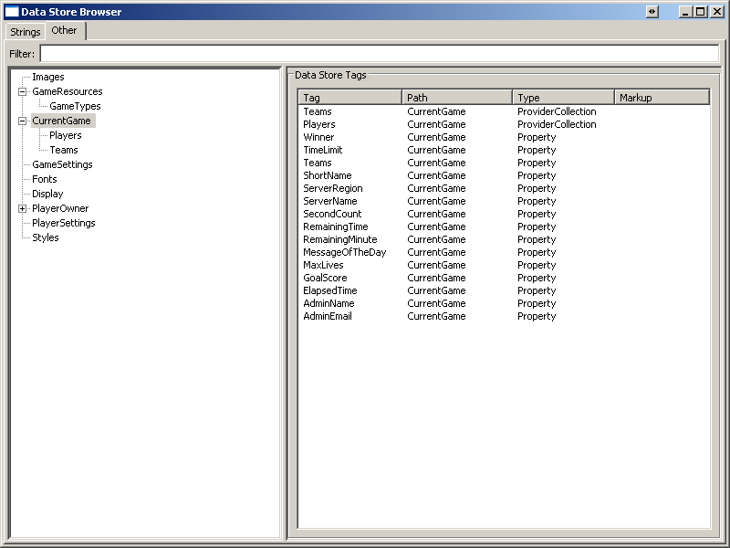
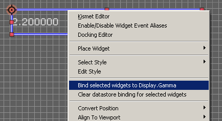
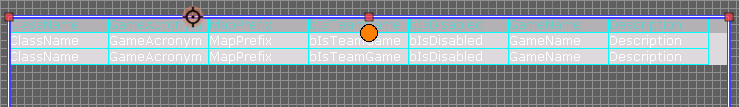
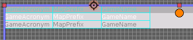

UDN
Search public documentation:
UIDataStoreJP
English Translation
中国翻译
한국어
Interested in the Unreal Engine?
Visit the Unreal Technology site.
Looking for jobs and company info?
Check out the Epic games site.
Questions about support via UDN?
Contact the UDN Staff
中国翻译
한국어
Interested in the Unreal Engine?
Visit the Unreal Technology site.
Looking for jobs and company info?
Check out the Epic games site.
Questions about support via UDN?
Contact the UDN Staff
UI データストアシステム
ドキュメントの概要 : UnrealEngine3 のデータストアシステムに関する技術的なガイド ドキュメントの変更ログ : レジストリデータストアの例示の開始。概要
データストアシステムは、一つのゲームの種々のシステム間でデータを操作したり、送ったりする強力で柔軟性に富んだメカニズムです。本書はデータストアシステムの主要コンセプトとアーキテクチャを特定し、任意のデータ型を利用するための統一されたインタフェースを提供するため、データストアシステムのコンポーネントの組み合わせ方法を説明します。 本書は (UDN wiki の他の全ての文書と同様に) 誰が変更してもかまいません。 不正確、古い又は明確化が必要な情報があれば、本書の読者は、読みやすさ、有用性または、本社で提示された情報の正確性を改善するために任意の変更を加えてもかまいません（ぜひ、変更してください）。用語
データ ストア タグ : 登録されたデータストアのインスタンスを個別に識別するために使用された名前。通常はデータストアの 'Tag' プロパティの値ですが、 (例えば、実行時に生成された名前を戻すために) UUIDataStore::GetDataStoreID() メソッドによりオーバーライドすることもできます。 マークアップ テキスト (又は データ ストア マークアップ): データストアマークアップテキストは、データストアフィールド及びプロバイダが UI 又は 他のシステムから参照される方法で、 html タグと似ています。マークアップの構文については、マークアップ構文を参照してください。- バーチャル データ ストア
- 存在しない (すなわち、データストアクライアントに登録されていない) データストアですが、データストアマークアップ解析コード（例えば属性データストア）によって認識されます。
コンポーネント
データストアシステムには、データストアクライアント、データストア、データプロバイダ及びデータサブスクライバ/パブリッシャーの四つの主要コンポーネントがあります。データストアシステムのそれぞれのコンポーネントの役割の説明を行います。データストアクライアント
データストアクライアントは、データストアの登録とライフタイム管理に責任を持つと共に、登録済みのデータストアへのアクセスを UI 及び他のシステムに提供する単一のオブジェクトです。 データストアクライアントは、ゲームが実行されている間は存在しつづけます。セットアップ及び初期化
データストアクライアントを生成するために使用されるクラスは、 Engine.DataStoreClientClassName プロパティの値によって決められます。 デフォルトでは、使用されるデータストアクライアントクラスは Engine.DataStoreClient ですが、ゲームの DefaultEngine.ini の[Engine.Engine] セクションの DataStoreClientClassName プロパティの値を変えることによって、変更できます ; もしも、本プロパティの数値が無効の場合 ( 空白、DataStoreClient のチャイルドクラスと関連していない、その他 )は、デフォルトのデータストアクライアントクラス (Engine.DataStoreClient) が代わりに利用されるはずです。 UEngine::InitializeObjectReferences() 内 (検索無しのローディングと互換性を持つオブジェクトを動的にロードしている数少ない場所の一つ) で、設定済みの DataStoreClientClassName が、ロードされ、 Engine.DataStoreClientClass プロパティの中にクラス参照は格納されます。データストアクライアントは、 UUIInteraction::InitializeGlobalDataStores() 内で、 UI コントローラ (UIInteraction) によるエンジンの初期化中に作成されます。その後 root-set に追加され、（ガーベージ・コレククションは絶対発生しません。) データストアクライアントと共に登録された任意のグローバルデータストア（次のセクション参照）を作成し、初期化します。
操作
データストアとの全ての初期のやり取りは、データストアクライアントを通じて行わなければなりません。データストアインスタンスを作成するため、新たなデータストアを登録するため、タグにより登録済みのデータストアを検索するため、登録済みのデータストアに様々な注意を送るために、データストアクライアントはメソッドを提供しています。データストアクライアントは、データストアの２つのリストを維持します。それは、グローバルデータストアと、プレイヤデータストアです。グローバルデータストア
特定のプレーヤ個別にデータを提供しているので無いならば、そのデータストアは、グローバルデータストアとみなされます。マップ名及びキャラクターの人物紹介のような静的なゲームリソース、利用可能なインターネットゲームホストの情報のようなリモートデータ、現在のゲームのスコアの限界のような動的データは、グローバルデータストアで提供されるであろうデータ型の例です。データストアクライアントが初期化 (UDataStoreClient::InitializeDataStores()) された時、 GlobalDataStoreClasses 配列に登録された個々のグローバルストアクラスの一つのインスタンスが作成され (グローバルデータストアを登録する場合の指示については、data store registration (データストア登録) セクションを参照してください) 、 RegisterDataStore() を呼び出すことでデータストアクライアントと共に登録されます。個別のグローバルデータストアは、登録が正しく行われるために、ユニークなデータストアタグを持たなければなりません。登録が成功したら、(デフォルトでは）グローバルデータストアはゲームが終了するまではメモリ内に留まります。グローバルデータストアでは、データストアクライアントの FindDataStore() メソッドを呼び出し、必要なデータストアのタグを渡すことにより任意のシステムからのアクセスが可能となります
プレーヤーデータストア
提供しているデータが特定のプレーヤーに対して固有のものならば、そのデータストアは、プレーヤーデータストアとみなされます。コントローラの設定のようなプレーヤー個別の設定データ、友達リストのようなリモートデータ、現在の健康状態のような動的データは、プレーヤーデータストアで供給されるであろうデータ型の例です。プレーヤーデータストアとグローバルデータストアの間には非常に重要な違いがいくつかあります :- 新規にプレーヤーが生成されたときに、プレーヤデータストアが生成されます - エンジン初期化の時ではありません
- プレーヤーデータストアは、ゲーム実行時に常に存在しているわけではありません : （対戦中のプレーヤがサインアウトプレーヤーがゲームから削除された場合、全てのプレーヤーデータストアについて、該当のプレーヤの登録は抹消され、次いでガーベイジコレクトされます
- 個々のプレーヤーデータストアの単一インスタンスは個々のプレーヤーごとに作成されます ; プレーヤーデータストアのタグは、一人のプレーヤーのデータストアの一覧表内に限ってはユニークでなければなりません
- このように、個々のプレーヤーは、与えられたタグ付のデータストアを持っています ; 例えば、 'PlayerSettings' というタグをもつプレーヤーデータクラスが登録されていて、3 人がゲームに参加している場合は、 'PlayerSettings' タグを持つ三つのデータストアインスタンスが存在するはずです。これで、マークアップタグにどのプレーヤーのデータストアを解析すべきかを示す情報を入れておく必要がないため、プレーヤーデータストアに関連するデータストアマークアップタグの解析が容易になります。
RegisterDataStore() に対する呼び出しの中で新規プレーヤに対する参照を渡すことによりプレーヤーデータストアとして新規のインスタンスを登録します。新規に作成されたプレーヤーとそのプレーヤーのプレーヤーデータストアへの参照を格納している PlayerDataStores 配列に対して新たな要素が追加されます。 データストアクライアントが、プレーヤー削除の通知を受けた時には、その通知は、削除されたプレーヤーと一致する PlayerOwner の要素を検索するために PlayerDataStores 配列で繰り返されます。削除されたプレーヤーに対して PlayerDataStoreGroup が発見された場合は、そのプレーヤに関する、全てのプレーヤーのデータストアの登録を抹消し、 PlayerDataStores 配列から要素を取り除きます。 PlayerDataStores は、プレーヤーと必要なデータストアのタグへの参照を渡して、データストアクライアントの FindDataStore() メソッドを呼び出すことによって、任意のシステムからアクセス可能です。
データプロバイダ
データプロバイダ (Engine.UIDataProvider) は、データストアシステムの基本的な構築ブロックです。データプロバイダは、UIとゲームの間のゲートウェイとして動作して、UIにはどこで実際にデータが生成されたかを知らせずに、UIがデータを送ったり受け取ったりすることを許可します。データプロバイダは、データフィールドを使用して他のシステムにデータを公開します。データフィールドは、データプロバイダがサポートするデータを一意的に特定するタグと共に、どのタイプのデータフィールドかを示す値を含んだ構造体 (UIDataProvider.UIDataProviderField) です。データフィールドタグ (UIDataProviderField.FieldTag) は、データプロバイダが提供するデータの "別名" と考えることができます。個々のデータフィールドタグは、ネスト化されたデータプロバイダ (ネスト化されたデータプロバイダの配列含む) 、又は、ゲームでのなんらか現実的なデータの二種類のうちの、どちらか一方であることを示してしています。データ値の型は、 FieldType (UIDataProviderField.FieldType) の値によって指定されます。データストアシステムで現在サポートしている型は、int 、 bool 又は string のような単純型; 現在の値、最小値、最大値で構成される範囲値型; データの配列 ; ネスト化されたデータプロバイダの配列 (EUIDataProviderFieldType enum を参照) を含んでいます。 特定のデータプロバイダによりサポートされるデータフィールドタグのリストでは、 (ウィジットによってバインドが可能なデータフィールドタグを作成する) UI エディタのデータストアブラウザ内に表示可能な項目を決定します 。データフィールドタグは完全に任意指定であり、データプロバイダで問題が無ければ、どのような方法でも生成することができます。事実上、個々のデータプロバイダクラスでは、おそらく利用可能なデータフィールドタグのリストを生成するために異なるメソッドを使用しています。データプロバイダの中には、クラス (データプロバイダのクラス、又は、ゲームに含まれる他のクラス) のメンバプロパティを使用して、リストを生成しているものがあるかもしれません; データフィールドタグをハードコーディングで記述しているかもしれませんし、デフォルトプロパティ又は ini においてプログラマにより書き込まれる名前の配列を利用するかもしれません。データプロバイダがサポートされるタグのリストを生成する方法は、データプロバイダが公開するデータ値を格納する方法及び場所によって決められます。 個々のデータプロバイダでは、独自の希望する方法でデータフィールドタグのリストを生成できますが、全てのデータプロバイダは、プロバイダによって操作できるデータを参照するために UI が利用できるタグのリストと一緒に UI を提供しなければならないという点が重要です。 データプロバイダでは、データ値の読み出しと共にデータ値の書き込みができます。許可されたトランザクションの型は、データプロバイダの WriteAccessType フィールドによって決められます。このフィールドの値が、 ACCESS_ReadOnly であれば、データプロバイダに対して、公開されているデータの更新が許可されません。データストア
データストアは、データストアシステムと情報のやり取りを行うためのトップレベルの公開インタフェースです。データストアは、他のシステムに対し、ゲーム関係のデータのやり取りを許可します。その時、データの型が何かを知る必要はありません。また、参照情報とライフタイム管理をカプセル化する事で、他のシステムは、オブジェクト参照の保持、不正なポインタ値、初期化されないデータ等の、ガーベージコレクションやメモリ使用の増大を引き起こすような問題を考慮せずに、データを自由に利用することができます。データストアでは、対象のデータの任意の型 - 文字列、イメージ、基本的な型 (int, bool, float)、配列、構造体からある種のオブジェクトまで - を操作することができますが、もっと複雑な型に対しては、そのデータ提供のために設計されたデータストアによるカスタム操作が必要となります。データストアに格納されたデータの型を気にしなくても良いこと、バインディングのインタフェース、データの読み出し、書き込みについては、通常操作と同様となります。 データプロバイダの目的は、特定の静的リソース又はゲームプレイオブジェクトインスタンスについてのデータを追跡することですが、データストアは、主に、他のデータプロバイダのコレクションとしてサービスを行うように設計されています。データストアは、関連するデータプロバイダのグループに対する集合体を提供する用途が最もふさわしく、その方法は、ディレクトリツリーのフォルダと良く似ていると考えられます。データストアに含まれるデータプロバイダは、データストアマークアップ文字列の形式で、データストアによって提供された任意のタグを使用して、通常のデータストアフィールドと同様にアクセスされます。 データストアには三つの型があります - 永続データストア、シーンデータストア、擬似データストアです。 永続データストアは、データストアクライアントと共に登録されますので、UI (又は他のシステム) の任意のシーンの任意のウィジットからアクセスすることができます。永続データストアはリソースデータ (ゲームタイプ又はマップ記述) 、リモートデータ (リモートゲームホスト情報) 、及びゲームのスコアや時間制限などの状態データのような情報を追跡します。前述のデータストアクライアントのセクションで言及したグローバル及びプレーヤーのデータストアクラスは、どちらも永続データストアとみなされます。 一時データストアは特定の UIScene (UIシーン) により生成され、その UIScene (UIシーン) と関連づけられていますので、そのシーンまたは子供のシーンのウィジットのみからアクセスが可能です。一時データストアはシーン内のエディットボックス内に入力された値、または、おそらく、接続ペンディング情報などの情報を追跡します。 擬似データストアは、実在しないデータストアです。つまり、データストアは、 (マークアップ経由の) タグによって参照できますが、そのデータストアに対応するデータストアクラスは有りません。現時点では、擬似データストアはただ一つのデータストアしかありません。UI内で利用されるデータに対してインライン変更 (太字、イタリック等) を適用する機能を提供する属性データストアだけです。データサブスクライバ / パブリッシャ
データサブスクライバは、データストアシステムで検索される任意のオブジェクトとして定義されます。それに対して、パブリッシャはデータストアシステムに対してデータを書き込む任意のオブジェクトです。データストアサブスクライバになるために、クラスはデータストアシステムからのデータを検索するためのメソッドを宣言している Engine.UIDataStoreSubscriber インタフェースを実装しなければなりません。 同様に、データストアパブリッシャになるためには、そのクラスは、 Engine.UIDataStorePublisher インタフェースクラスを実装しなければなりません。 UIDataStorePublisher インタフェースは、 UIDataStoreSubscriber インタフェースの子供であることを明記ください。そのため、 UIDataStorePublisher で実装された任意のクラスは自動的にデータストアサブスクライバとなりますので、これらのメソッドも同様に実装してください。 データストアサブスクライバは、データストアバインディング (UIDataStoreSubscriber.UIDataStoreBinding) を経由してサポートする多くのデータフィールドサブスクリプションを定義します。この構造体は、単一のデータフィールドタグについての多様な情報を追跡し、データストアマークアップ文字列のデータストア参照への解決 (ResolveMarkup, Un/RegisterSubscriberCallback) をカプセル化するとともに、データストアからのデータ値の検索及び書き込み (GetBindingValue/SetBindingValue) を行います。通常、データストアバインディングは、任意のデータストアフィールドに利用できるため、ただ一つのデータストアバインディングが必要となるだけです。しかしながら任意の数を生成してもかまいません。
UIDataStoreSubscriber インタフェースによって宣言されたメソッドの一つは、 RefreshSubscriberValue() メソッドです。データストアバインディングが、 (バインディングマークアップ文字列をデータストア参照に解決することによって) アクティベートした時に、サブスクライバの RefreshSubscriberValue メソッドがサブスクライバコールバックの解決済みデータストアリストに追加されるため、サブスクライバはデータフィールドの値が変更されたときに通知を受け取ります。詳細情報は Notifications (通知) を参照してください。
マークアップ構文
データストアマークアップに関する構文は、とても単純な形式でHTMLに良く似ています。マークアップテキストは角かっこで囲まれて、データストアタグ及びデータフィールドへの "path" (パス) という、２つの主要なセクションに分かれています。データストアタグは、データを検索するために使用するデータストアを決めるために使用され、必ずコロン記号 (:) が末尾についています。 "data field path" (データフィールドパス) は、データストア (または、その内部データプロバイダの一つ) の特定のデータフィールドにアクセスするために利用される一連のデータフィールドタグです。データフィールドパスには、一つ以上の "node" (ノード) が含まれます。このノードは、データストア又はそのデータストアに含まれるネスト化されたデータプロバイダによって公開されたデータフィールドタグに対応しています。複数のノードはピリオド文字 (.) によって区切られ、配列の索引は、セミコロン記号 (;) で区切られています。 ある種のユーザ設定、例えばお気に入りの武器やコントローラのレイアウトへのアクセスを提供するデータストアがあるとしましょう (このデータストアタグを 'Settings' と仮定します) 。 この設定用のデータストアは、 PreferredWeapon と Controls 二つのデータフィールドをサポートします。 PreferredWeapon は、プレーヤーのお気に入りの武器の名前を持つ単純文字列を表すタグです。それに対して、 Controls タグは内部のデータプロバイダに対応しています。 Controls データプロバイダは、 Sensitivity と InvertY という二つのフィールドを持ちます。ここで、 Sensitivity は、二つの (各軸に対して一つずつ) エレメントを含む配列で表現されるタグであり、 InvertY は、プレーヤーの Y 軸が反転しているかどうかを示すブール値を表しているタグです。そのため、 Settings データストアは、次のような表記になります :- Settings
- PreferredWeapon
- Controls
- Sensitivity[2]
- InvertY
<Settings:PreferredWeapon> Controls データプロバイダ内の InvertY データタグを参照するためのマークアップ文字列は次のようになります :
<Settings:Controls.InvertY>
. InvertY データフィールドタグは、 Controls 内部データプロバイダによってのみサポートされるため、 Controls データプロバイダを通してのみアクセスができます。マークアップ文字列 <Settings:InvertY>
は、動作しません、なぜなら、 Settings データストアは、 PreferredWeapon と Controls の二つのデータフィールドタグのみをサポートしているからです。Sensitivity 配列の最初の要素を参照するためには、マークアップ文字列は次のようになります :
<Settings:Controls.Sensitivity;0>
(コードの場合と同様に、マークアップ配列要素の索引は0から始まる点に注意してください) 。
内部データプロバイダの "scope" (範囲) 内に居る場合は、その内部データプロバイダによってサポートされるデータフィールドタグのみが、内部マークアップ文字列の次のノードとして有効であることを明記してください。例えば、次に挙げるマークアップ文字列は正しく解決されません : <Settings:Controls.PreferredWeapon>
なぜなら、"Controls" ノードが解析されたときに、次のノードは Controls データプロバイダのコンテキストを使用して解決されるからです。
カテゴリ
データストアは数種の一般的なカテゴリに分類することができます。これらのカテゴリはデータストアから提示されるデータの型または、データの値の存在する場所に従って分けられます。これらのカテゴリはデータストアシステムのクラス階層に全く関連して居ません。ですから、静的データストアは動的データストアから派生することができる等です。そのため、これらのカテゴリはデータストアが解決する問題の型を理解し分類する手段で利用されることを意図しています。静的 (又はリソース) データストア
静的データストアは、ゲームの実行中に変更されないデータを公開するデータストアです。静的データストアでは、本来そのデータが静的とされているため、そのデータフィールドに対する値の更新の発行を通常は許可しません。データストアのこれらの型で利用可能なフィールドのリストは一般的には変更されません。これらのデータストアはセットアップが最も容易です、なぜなら、ライフタイム管理をサポートするために追加のコードや実行時のゲームプレイオブジェクトのインスタンスとの関係が不要だからです。 これらのデータストアは以下のようなデータを公開します :- キャラクタ情報。例えば履歴、最大体力値、攻撃力、利用可能な武器、メッシュ、スキンその他。
- マップデータ。例えば、利用可能なマップ、マップ名、最大サポートプレーヤー、説明、スクリーンショットその他。
- ローカライズされた文字列
- テクスチャ又はマテリアルへのアクセス
- Engine.UIDataStore_Strings (ここでサポートされたフィールドはエディタによって修正可能であるため、エディタ内で、このデータストアは可変データストアとみなされます。)
- Engine.UIDataStore_GameResource
動的 (又は 状態) データストア
動的データストアはゲーム中に変更されるデータを公開するデータストアです。動的データストアはデータストアの目的に依って、データフィールドへの更新値の書き込みを許可したりしなかったりします。この型のデータストアの利用可能なフィールドのリストは一般的には変更されません。ゲームで使用されたデータストアの大部分は通常は動的データストアで、これらのデータストアから利用されるデータプロバイダはほぼいつでもゲーム内のオブジェクトのインスタンスと関連しています。 これらのデータストアが公開するデータの例は以下のものです :- ゲームの状態。 例えば、接続しているプレーヤーの数、利用可能なピックアップ、残り時間、残りの目的、その他。
- プレーヤーの状態。 例えば、現在の体力、弾薬、装備している武器、現在の進度、その他。
- リモートセッションデータ。 例えば、利用可能なオンラインセッション、友人のリスト、接続情報、セッション検索結果
- 構成可能な設定データ。 例えば、プレーヤーの選択、ホスティングの選択、その他。
- Engine.UIDataStore_OnlinePlayerData
- Engine.UIDataStore_OnlineStats
- Engine.UIDataStore_OnlineGameSearch
- Engine.UIDataStore_Settings 及びそのチャイルドクラス
- Engine.UIDataStore_GameState 及びそのチャイルドクラス
可変データストア
可変データストアはデータストアによって実行時のフィールドのリストの更新を許可するデータストアです。これらのデータストアは、データフィールドに対して更新値の書き込みを常に許可しますので、通常は、共有しなければならない任意のデータ、例えば複数シーンに渡るもの、デザイナにとってのスクラッチパッドへの格納、又は、 (特定のクラスのインスタンスのような) データの非定型のコレクションに関連するデータストアによって公開されたデータフィールドの利用時に使用されます。 可変データストアの例 :- Engine.UIDataStore_Fonts
- Engine.UIDataStore_Images
- Engine.SceneDataStore
データストアの生成
データストアの生成には３つのステップが含まれます。 - 設計、実装そしてテストです。はじめに、それぞれのステップに含まれるタスクの簡単な概略を述べ、それから、それぞれのタスクについて、より深く検討します。 第一のステップは設計です。以下のようなタスクで構成されています。 :- Type of data (データの型) - 第一に、このデータストアによってどの型のデータを公開するかを決定する必要があります。静的データ、動的データ、可変データのいずれを公開するために、このデータストアを、利用するのでしょうか ?
- Components (コンポーネント) - 次に、データストアに対する責任をどのように分割するかを決定する必要があります。このデータストアはデータへ直接アクセスを提供するのでしょうか ? 複数データプロバイダ構成でしょうか ? または、上記の組み合わせでしょうか？どれだけ多くのデータプロバイダがこのデータストアを必要としているでしょうか？これらデータプロバイダの責任にはどのようなものがあるでしょうか？このデータストアは単一リソース、単一クラス型の複数インスタンス、複数クラス型の複数インスタンスいずれのデータを公開するのでしょうか ?
- Data field generation (データフィールド生成) : 次にデータフィールドタグのリストの生成方法を決定します。このデータストアに対しては、どのような方式が妥当でしょうか ? - ハードコードのリスト ? データ主導でしょうか ? 生成済みのネスト化されたデータプロバイダをベースにして動的に生成されますか ?
- Storage (ストレージ) : 次の事柄は、このデータストアにより公開されるデータの値がどこに存在するかを考慮することです。 データストア (又はそのプロバイダ) は、自分自身に値を格納するべきでしょうか、それとも、このデータストアは単に既に他の場所、例えばゲームプレイオブジェクトクラス内にあるデータを指し示すだけでしょうか。
- Presentation (プレゼンテーション) : 最後に、どのようにデータフィールドのリストをユーザ (例えばデータストアブラウザ内) に提示するかを定めてください。ネスト化されたデータプロバイダを使った場合は、データストアは単にネスト化されたデータプロバイダに対するアクセスを提供するタグを提供するべきでしょうか ? データストアでネスト化されたプロバイダのデータフィールドをフォーマットしてデータプロバイダがユーザに対して透過的になるべきでしょうか ?
- Class creation(クラス生成) : 第一に、データストアとそれをサポートするクラスを生成します。
- Registration(登録) : 次に、新しいデータストアをデータストアクライアントと共に、実行時に生成されるようにするために登録しなければなりません
- Methods(メソッド): 最後に、データストアを動作させるためにメソッドを実装する必要があります。
- Setting up a test scene (テストシーンのセットアップ) : 最初に、データストア内の全てのメソッドが正しく動作することを簡単にテストするために使用するテストシーンをセットアップします。
- Binding widgets (ウィジットのバインディング) : 次に、テストシーンにおいてウィジットに対するバインディングをセットアップします。
設計
作業一覧ステップ #1: データの型
このステップは、非常に自己説明的です - データストアが公開するデータの型は何ですか ? データストアによって公開されるデータの型を決めることは、データストアの構成方法をどうするか、データストアの defaultproperties ブロックにどのような値を設定するか、どのようなメソッドを実装する必要があるかの決定を助けます。もし、データストアがコレクションを含んでいるならば、データストアクラスでは UIListElementProvider インタフェースを実装する必要があるでしょう。 動的データを提供するデータストアに対して、サブスクライバはデータの値を変更することを許可されるべきでしょうか ? もしそうであれば、SetDataField ファミリーのメソッドを実装すると共に、データストアの WriteAccessType に対する値が ACCESS_ReadOnly 以外の何らかの値に設定されていることを確認する必要があります。可変データを提供するデータストアの場合は、 UIDynamicFieldProvider (又は、このクラスのチャイルドクラス) をデータストアに対する内部データプロバイダとして使用する必要があります。なぜならこのクラスには既に可変データストアの機能をサポートするために必要な関数が実装されているからです。
ステップ #2: コンポーネント
ここが、データストアクラスの設計の心臓部です。 データストアシステムでは制約が無いため、データストアの構成の方法に対するオプションは多数あります。上流では、これは任意の型で好きなデータフローを記述できるということを意味しますが、正しく定義された区切りがない場合は、どこから始めるか、又は、どの方向に進もうかという決定が困難になります。データストア (又はデータプロバイダ) の設計をする場合は、三つの基本的な構造体を選択することができます :- フラットデータストア - データストア自身が、自分のデータプロバイダとして働き、他の扱うべき介在は存在しません。この構造体では、データストアでサポートした全てのデータフィールドはデータに対応しています。データストアは、全てのデータ値の検索と書き込みに責任を持ちます。
- 利点 :
- コードの記述、レビュー及び維持がより容易。データフィールドの生成、データ値の検索及び書き込みはすべて一つのクラス内なので、コードが追いやすく保守しやすくなります。
- 効率性 - 全てのデータフィールドがデータストア自身に含まれているので、マークアップ文字列をデータ値に解析する全体のプロセスはとても早くなる可能性があります。
- 欠点 :
- このデータストアの機能を他のデータストアで再利用する方法は有りません。
- UIエディタのデータストアブラウザでは、サポートしているデータフィールドはフラットなリストとして提示され、データストアの利用可能なデータフィールドのブラウジングが若干扱いにくくなるかもしれません。
- 用途 : この構造体の型は、ローカライズされた文字列又は (例えばイメージを参照するためにパス名を使用した) イメージへの直接アクセスなどのデータの個別の型を提示するデータストアに最もふさわしいものです。
- 利点 :
- 複合データストア - データストアはネスト化されたデータプロバイダにアクセスするための単なるポータルです。この構造においては、全てのデータフィールドは内部のデータプロバイダに対応しており、そのデータプロバイダは実データに対するアクセスを提供しています。データストアは、データプロバイダの生成と管理に責任を持ち、ある場合には、ライフタイム管理の一部 (特にレベル変更時のクリーニングアップ) を扱います。データストアのプロバイダは自身の内部データプロバイダを持っても持たなくても良いです。
- 利点 :
- 全てのデータの検索と書き込みは個々のデータプロバイダに権限委譲されていますので、データストアのコードはかなり簡単になっています。
- 一つのデータストアの "傘" を通じて関連するデータのグループへのアクセスを許可します。
- 職務の責任をとても簡単に分離できます、既存クラスの再利用を推進し、維持のコストを削減します。
- UI エディタのデータストアブラウザでは、データはカテゴリ分けされて表示されますので、特定のデータフィールドをより容易に見つけることができます。
- 欠点 :
- 抽象化では追加のレベルで間接を導入します。どのようにクラスが動作するかを理解するためにコード全体をより多くトレースする必要があります。
- 実装は、数種のクラスにわたって広がりますので、保守の最中にバグを混入する可能性が増加しています。
- UI エディタのデータストアブラウザで特定のデータフィールドを検索するために、より多くのクリックが必要です。
- 用途 : この構造体の型は、多くの関連するグループのデータ、すなわち一種の "メタデータストア" 、へのアクセスを提供するデータストアに最もふさわしいです。この構造体は、データストアに、 ( Engine.PlayerReplicationInfo のような) ゲームプレイ関連クラスの複数のインスタンス中のデータに対するアクセスを提供する必要がある時に好ましいものです。これは、より一般的なデータストアの構造体です。
- 利点 :
- 結合データストア - このデータストアは、二つの異なる型の結合です。そのデータフィールドのいくつかは実データを表します ; 他のフィールドはネスト化されたデータプロバイダを表します。
- 明白な理由から、この構造体は他の二つの型の有利な点と不利な点を全て持っていますので、ここで繰り返すことはしません。
- 用途: この構造体は、任意のゲームプレイクラスに対しデータを提示するネスト化されたデータプロバイダに対して最もふさわしいです。ここで、ゲームプレイクラスは、 (なんと！) 他のデータプロバイダクラスがサポートしている型のメンバ変数を持ちます。例えば、 Engine.PlayerDataProvider クラスは Engine.PlayerReplicationInfo クラスの databinding プロパティを公開しています。 Engine.TeamDataProvider クラスは、 Engine.TeamInfo クラスの databinding プロパティを公開しています。 PlayerReplicationInfo は、データバインディングを行わない TeamInfo 変数を含んでいます。 しかし、もしも、データプロバイダを通して、プレーヤーに対しプレイヤー自身のチームにアクセスする機能を持たせたい場合は、 databinding キーワードを TeamInfo 変数に追加し、 PlayerDataProvider を追加することによって、フラットデータプロバイダが、むしろ、結合データプロバイダになると言えます。
ステップ #3: データフィールドのリストの生成
サポートしているデータフィールドのリストの構築は、通常、データストアの作り始めの時期には、最も混乱を招くステップの一つとなってしまいます。これは少し皮肉っぽいのですが、なぜならば、一度 "難関を乗り切ってしまえば" このステップはプロセス中で最も容易なステップとなるからです。このステップにおける最初の混乱に対する最大の貢献要素は、その性質に縛られないようにすることです。言い換えれば、 "サポートされるデータフィールドのリストをどのように生成したら良いでしょうか ?" という質問に対する最も正確な回答は、 "どうでもやりたいように" というようなものになるでしょう、もちろん、この回答は、それほど質問者には役立つものではありません。そのため、まずは、基本から始めて、 "どうでもやりたいように" の回答レベルまで上がっていきましょう。 - まずは、簡単なデータストアを取り上げます データプロバイダからサポートしているデータフィールドのリストを検索するためのメソッドは、UUIDataProvider::GetSupportedDataFields() メソッドです。一つのパラメータ - UIDataProviderFields の配列に対する参照が必要です。この配列にデータプロバイダがサポートしているデータフィールドのリストを格納するはずです。 UIDataProviderField は、名前と型で構成される構造体です ( FieldProviders という他のフィールドもありますが、ここでは少しの間無視しておきます) 。データプロバイダがサポートする個々のデータフィールド毎に、そのフィールドのタグおよび型を含んでいる配列に一つの要素を追加します。たとえ、そのデータフィールドが自身のデータフィールドを持つ内部データプロバイダを含んでいても、配列に追加されたデータフィールドは、データストア自身によってサポートされたデータフィールドのみのはずです。以下のとても簡単な例を見てください。 :
現在のガンマ設定に対する直接の読取り及び書き込みアクセスを提供するという一つの目的をもつ、極端に単純で、特殊化されたデータストアの生成を行いたいとしましょう。ゲームによって使用される現在のガンマ値は、 UClient::DisplayGamma ですので、データストアでは自分で何らプロパティを持つ必要はありません。ここでは、一つのデータフィールドをサポートするだけとし、このデータフィールドにはタグとして "Gamma" を使用することにします。このデータフィールドはコレクションを表わしませんし、内部データプロバイダとも関連しません - 一つのデータ値を表わすので、このデータフィールドに対する型は DATATYPE_Property になるはずです。そのため、この新しいデータストアの GetSupportedDataFields() メソッドにおいて、配列に、タグ "Gamma" 及びフィールドタイプ DATATYPE_Property_ を持つ一つの要素を追加します。とても簡単な例ですね ? さて、コードを確認したければ、実は、このデータストアは現実に既に在在しています - _Engine.UIDataStore_Gamma 。
サポートされるデータフィールドのリストの構築のために全く異なったメソッドを使う他のデータストアを見てみましょう - フォントデータストア (Engine.UIDataStore_Fonts) です。このデータストアは、文字列途中のフォントの切り替えを行う、埋め込みマークアップの利用を許可するために、文字列レンダリングコードによって使用されます (例は、 TestUIScenes.upk パッケージの TestFontScene を参照ください) 。安全に UObjects を参照する唯一の方法はパス名を経由することですので、このデータストアがアクセスを提供するデータは、メモリ内の全ての有効な UFont オブジェクトに対するパス名となります。このフィールドの "値" は、単なる文字列ですので、このフィールドの型も、 DATATYPE_Property となります。そのため、 UIDataStore_Fonts::GetSupportedDataFields() メソッド内では、メモリ中の個々のフォントオブジェクトに対して一つのデータフィールドを、データフィールドの型に DATATYPE_Property を指定して追加します。
最後に、もっと複雑なデータストアを見てみましょう - 現在のゲームデータストア (Engine.CurrentGameDataStore) です。このデータストアは、ゲームにおける全ての PlayerReplicationInfo 及び TeamInfo オブジェクトに対するデータを提供する内部データプロバイダの二つのコレクションを持ちます (GameData フィールドが操作される方法については、今は考慮しませんが、後述する Presentation (プレゼンテーション) セクションで取り上げます) 。これらの二つのコレクションにアクセスするために利用するために使用することを決めたタグは、それぞれ "Players" 及び "Teams" です。これらは、データプロバイダのコレクションですので、二つのフィールドの型はどちらも、 DATATYPE_ProviderCollection となります。==UCurrentGameDataStore::GetSupportedDataFields()== メソッドにおいて、出力配列に対して [*GameData*フィールドを含まずに] 二つの要素を追加します ; 最初の要素のタグは "Players" で、二番目の要素のタグは "Teams" です。これらのデータプロバイダによってサポートされたデータフィールドは、対応する GetSupportedDataFields メソッドによって追加されますので、これらをここで追加することは考慮しません。しかしながら、もう一つの情報がここで必要です。 FieldProviders を以前に無視したことをご記憶でしょうか ? さて、 UIDataProviderField のデータフィールドの型を DATATYPE_Provider 又は DATATYPE_ProviderCollection に設定したとき、 FieldProviders の配列には、データフィールドによって表されたデータプロバイダインスタンスに対する参照を含まなければなりません。データ型が (単一のデータプロバイダを含んでいる) DATATYPE_Provider の場合は、配列は一つの要素のみを含みます。
UCurrentGameDataStore::GetSupportedDataFields() 内のコードを見ると、少し変わった点があることに気がつくでしょう - エディタの処理かそうでないかに依って、異なったロジックとなっています ! これは、自分自身のデータストアを生成するときに心に留めておく必要があるとても良い観点を提示しています。上述のように、 DATATYPE_Provider 又は DATATYPE_ProviderCollection のフィールドタイプを持つデータフィールドを追加するとき、それぞれのデータフィールドに対して追加された FieldProviders メンバには、正しい型の有効なデータプロバイダインスタンスに対する参照を含まなければなりません。残念ながら、 CurrentGameDataStore の動作の決まりのため、 "player" 及び "team"のデータプロバイダは PlayerReplicationInfo 又は TeamInfo アクターがゲーム中に生み出されたときに生成されます。これらのオブジェクトのどちらもエディタでは生み出されません、そのため、UI エディタで作業しているときは、 FieldProviders メンバにこれらのプロバイダのインスタンスを入れることはできません。どうしたらよいのでしょうか ??? この問題は UCurrentGameDataStore::GetSupportedDataFields() の特殊コードが提示しているものです。エディタでは、実際は、これらの内部データプロバイダから、何らデータを必要としていません ; サポートしているデータフィールドのリスト (又はデータスキーマ) が必要なだけで、その結果、それらのデータストアブラウザの木構造表示を行うことができます。実際のインスタンスの替わりに、対応するデータプロバイダクラスに対するクラスデフォルトオブジェクトを使用することで "DATATYPE_Provider/Collection は、データプロバイダインスタンスを保持しなければならない" という要求事項を満足するための強みとしてこれを利用します。これは、データブラウザコードで、それらのクラスのインスタンスを生成する必要が無いまま、エディタ内でサポートされたデータフィールドを得るために、 "Players" 及び "Teams" コレクションに対応するデータプロバイダへの問い合わせを許可します。
注記 : 現在は、 UCurrentGameDataStore::GetSupportedDataFields() 及び UCurrentGameDataStore::GetFieldValue() は、ゲームの実行中に "Players" 及び "Teams" のデータフィールドを操作しません (すなわち GIsEditor == FALSE ) ; これは、これらの関数内の単なるバグですので、この例の目的のため、ここでは目をつぶることにします。
ステップ #4: ストレージ
次のステップでは、データストアのデータフィールドの現実の値がどこから来るかを決定します。 このステップもまた、最初にデータストアシステムを調達するときには、非常に混乱するところです、なぜならばサポートされるフィールドのリストの生成を行うメソッドと同様に、データストアの値を格納及び検索するために利用される場所は完全に任意ですので、事実上はどこでもということになります。ステップ #3 では、サポートしているデータフィールドのリスト生成について、既存のデータストアのやり方を見てきました。たぶんお気づきでしょうが、個々のデータストアによって公開されるデータの格納場所は全く異なります。自身のデータストアを生成するときに、データは、完く自由に、どこに格納しても良いです。しかしながら、データを自身で格納するか、他のどこかにあるデータを単に参照するかを決定しようとする際に、従うべき若干のガイドラインがあります。データが二つの分類 - 具象データ又は抽象データ - のうちの一つに属すると考えることは便利です。具象データは、確かな格納場所を持ったデータです。具象データの例は、メンバ変数内に格納されたデータのようなものです。抽象データは、確かな格納場所を持たないデータに対して参照をおこないます ; データは手続きの手段を通してのみ、アクセス可能になります。抽象データの例はメモリ内の全てのフォントオブジェクトのパス名、又はローカライズされた文字列の値です。ローカライズされた文字列が構成キャッシュに格納されていたとしても実データはディスク上にあるため、抽象データとみなします ; 構成キャッシュにキャッシュされた特定のローカライズされた値又は構成値には、なんらの保証もありませんので、データを検索するときには、常にアクセス機構メソッド (アクセス機構メソッドは、データをまずディスクからロードする必要があります) を利用しなければなりません。 公開しているデータが抽象データなら、通常、数値は全く格納しないのが望ましいです。このデータは手続き的に生成されるので、通常は、 (例えば、データストアインスタンス内のメンバ変数に格納することによる)データ値のキャッシュは望まないでしょう。なぜならば、そのデータの性質では、読み出した瞬間に、なんらかの数値が古いものとなっている可能性を暗示しているからです。 そのため、たぶん、抽象データに対してはいかなる型の格納場所も必要ありません。サブスクライバが、 (GetDataStoreValue() を呼び出すことで) これらのデータフィールドの一つの値を要求した場合は、データを生成する手続きをどれでも実行し、その結果、サブスクライバは間違えのない最新版データを入手します。この例示のために、要求に応じて構成キャッシュからローカライズされた値か構成値を検索する、 UUIConfigSectionProvider::GetFieldValue() メソッドを参照してください。
具象データを公開するデータストアを生成する時は、このデータはほとんどすべての場合、どこか別の場所に既に格納されていて、データストアやプロバイダは、それに対し単なるアクセスを提供するだけです。この場合は、データを生かすべき場所を決定する前に若干の考慮が必要です。質問しなければならない最初の質問は : どのように、またどの範囲までこのデータはゲーム内で参照されるのか ? です。もしデータがコード内の他の多くの場所で直接参照されるならば、そこはそのままにしておいて、既存の場所のデータを同様に参照するデータストアを持つ事がたぶん最も良いでしょう。もしデータが数箇所から参照されているか、アクセス機構がデータアクセスのために利用されているならば、次の考慮に入ることになります。このデータストアのサブスクライバはどのようにこのデータを利用するのか ? データは主に (ゲーム又はマップの説明のように) メニューで使用されるのか、それとも (ゲーム状態データのように) ゲームの実行中に利用されるのか ? データが主にフロントエンドメニューで使用され、現在のデータの位置がコンテンツの参照を多く含むクラス内ならば、データの位置をデータストアの中に移し、それを探している以前から存在する参照を調整することは意味のあることかもしれません。この方法では、フロントエンドメニューでは、突然変異の説明のような些細なデータを検索するだけのために (参照している全てのコンテンツをロードする) このクラスをロードする必要はありません。突然変異クラス (又はどんなクラスでも) は、実行時にデータの参照が必要で、何らかの不具合をもつ副作用が無ければ、データストアシステムからこの値を依然として簡単に検索できます。
明らかに、もしデータストアクラスが公開するデータが具象データで既にどこかに格納されたデータで無いならば、たぶん、データ値を含むデータストア又はプロバイダに対してメンバ変数を追加することが最も簡単でしょう。
ステップ #5: プレゼンテーション
プレゼンテーションは、データストアのデータフィールドが UI エディタのデータストアブラウザ内に表示される方法を参照します。データストアブラウザは二つのペインがあります - 左側のペインは、ネスト化されたプロバイダのデータストアの階層を表示するツリーリストを含みます ; 右側のペインは選択されたデータストア又はデータプロバイダでサポートされているデータフィールドを表示します。 DATATYPE_Provider 又は DATATYPE_ProviderCollection の FieldType を持つデータフィールドは、右側ペインに表示されると共に、データストアの子供の項目として表示されるでしょう。以下のスクリーンショットを参照ください。- データストア内のデータフィールドとネスト化されたプロバイダ :

- ネスト化されたデータプロバイダに対するデータフィールド :
https://udn.epicgames.com/pub/Three/UIDataStore /datastore_nestedprovider.gif
GetSupportedDataFields() メソッドが呼び出された時、ネスト化されたデータプロバイダのために、通常は、 DATATYPE_Provider の FieldType を持つデータフィールドを追加します。データプロバイダを折りたたむために、データプロバイダに対してデータフィールドを追加するよりも、フィールドとしての出力配列にその全てのフィールドを追加し、これらのデータフィールドがデータストア自身に属しているように、呼び出し元が考えるようにだますため、データプロバイダの GetSupportedDataFields() を直接呼び出します。しかしながら、これを行うと、これらのフィールドがデータストアブラウザに二度出現しないでしょうか - データストアのフィールドとして一度、ネスト化されたデータプロバイダのフィールドとして一度 ? 現実には、出現しません - 前述したように、 DATATYPE_Provider/Collection データフィールドを追加する時に、ネスト化されたデータプロバイダへの参照も同様に指定されなければなりません。この理由の一つは、ネスト化されたデータプロバイダによってサポートされたデータフィールドのリストを引き出すために、データストアブラウザ (及び GetSupportedDataFields() を呼び出す他のコード) が UIDataProviderField 構造体の FieldProviders メンバーを利用するためです。プロバイダに対するデータフィールドを追加しない (すなわち、ネスト化されたプロバイダへの参照がありません) ので、データストアブラウザは、ネスト化されたデータプロバイダ上で GetSupportedDataFields() を呼び出すことはありません。
実装
ステップ #1: クラス生成
実装の最初のステップもまた、自己説明的です。既に、データストアがネスト化されたデータプロバイダを利用しているかどうかは決定していますので、この時点ではクラスを生成するのみです。 データストアにおいては、 UIDataStore により直接派生するか、特別なデータストアクラスにより派生する方が筋が通っているかを決定する必要があります。全てのデータストアクラスはとても特別なものなので、自身のデータストアクラスに対してフレームワークを構築していない限り、通常は UIDataStore から直接派生させます(データストアフレームワークの例としては、 UIDataStore_OnlineGameSearch クラスとそのチャイルドクラスを参照してください)。 データプロバイダは、また別の説明となります。データストアクラスに対して非常に便利な機能を含むデータプロバイダクラスは多数あるので、自分自身で作成する前に、全てのデータプロバイダに精通することは有益です。 主要なデータプロバイダクラスの概要については、 Data Provider Reference? (データプロバイダリファレンス) を参照してください。 データストアとデータプロバイダのクラスを生成してしまった後で、正常に動作することを確実にするため、設定する必要のある若干のプロパティがあります。 UUIDataStore::Tag: 最初に設定する項目は、データストアの Tag (タグ) です。データストアのタグは、データストアマークアップ文字列中でデータストアを参照するために利用できる名前です。データストアのタグは通常は変更する必要はありません、クラスの defaultproperties ブロックに Tag 値を設定することができるだけです。データストアのタグを動的にしたい、言い換えれば実行時に設定したい場合は、データストアを特定するために使用されるタグを戻すため、UUIDataStore::GetDataStoreID() メソッドを、オーバーライドすることにより可能です。
UUIDataProvider::WriteAccessType: 本プロパティはデータストアまたはデータプロバイダ内のデータフィールドが実行時に更新される可能性があるかどうかを決定するために利用されます。デフォルト値は ACCESS_ReadOnly で、データプロバイダのデータフィールドの変更は受け付けられないことを表します。任意のデータプロバイダ又はデータストアクラスがデータストアに対するデータを書き込みを支援する場合は、この値を ACCESS_WriteAll に設定する必要があります。
更に、継承したデータプロバイダクラスに依っては、データプロバイダクラスを正しく動作させるために必要な追加のプロパティが存在するかもしれません。これらのプロパティは Data Provider Reference? (データプロバイダリファレンス) で説明されています。
ステップ #2: 登録
データストアクラスを生成したら、データストアクライアントと共に登録する必要があります、生成されれば、実行時に初期化されます。前述したようにデータストアには二つの型があります - グローバルデータストアとプレーヤーデータストアです。登録プロセスはどちらも似たものとなります。 登録済みのグローバルデータストアのリストはデータストアクライアントの GlobalDataStores 配列に格納されます。新規のグローバルデータストアを登録するためには、ゲームの DefaultEngine.ini の[Engine.DataStoreClient] セクションの GlobalDataStoreClasses 配列にデータストアクラスのパス名を追加しなければなりません (カスタムデータストアクライアントを使用していたら、変わりにクラスのセクションに新たな要素を追加します)。例えば、ExampleGameで、Fontsデータストアを登録するために、 ExampleGame/Config/DefaultEngine.ini の [Engine.DataStoreClient] セクションに次のエントリを追加します file: =+GlobalDataStoreClasses="Engine.UIDataStore_Fonts"=。
登録済みのプレーヤーデータストアクラスはデータストアクライアントの PlayerDataStoreClasses 配列内に格納されます。新規のプレーヤーデータストアクラスを登録するためには、ゲームの DefaultEngine.ini の [Engine.DataStoreClient] セクション内の PlayerDataStoreClassNames 配列にデータストアのパス名を追加しなければなりませんが、これは、グローバルデータストアクラスが登録される方法と全く同じです。
ステップ #3: メソッド
さて、新しいデータストアを作成する際の、肝心な部分にたどり着きました ! データストアとプロバイダのクラスの生成とデータストアの登録が終わりましたので、 今や、データストアを動作させるために必要なメソッドを実装する時です。本セクションでは、これらのメソッドの前半、すなわち、データストアクラスによってサポートされるデータフィールドとの通信に関係するメソッドについての説明を行います。データストアシステムの設計時には、ベースクラスで可能な限り多くの仕事をさせることで、チャイルドクラスでは、データストア又はデータプロバイダの完全な機能の内のわずかなサブセットを実装する必要があるだけにすることが目的の一つです。 まず、必須メソッドを対象にしましょう - データストアクラスでオーバーライドしなければならないメソッドです。次に、オプションのメソッドを見ていきますが、これらも非常に頻繁にオーバーライドされます。最後に、めったにオーバーライドされないオプションメソッドを見ていきましょう。括弧で囲まれているメソッド名は、 UnrealScript メソッドに対応しています。 必須メソッド以下に挙げるメソッドは全てのデータストアとデータプロバイダで実装しなければなりません。といっても、たった一つのメソッドが対象となるだけです。
-
UUIDataProvider::GetSupportedDataFields()- 本メソッドは、どのデータフィールドがデータプロバイダでサポートされているかを決定するために使用されます。全くデータフィールドを持っていないデータプロバイダを作成するようなことは現実的に意味をなさないので、全てのデータプロバイダクラスは、本メソッドを実装しています。本メソッドは、データプロバイダでサポートされたフィールドを表示するコントロールを実装するため、データストアブラウザから呼び出されます。同様に、データプロバイダで特定のフィールドがサポートされていることを確認する際、他のメソッドから呼び出されます。本メソッドのデフォルト実装では、Native (ネイティブ) で無いデータプロバイダが本メソッド利用に応ずる機会を与えるため、GetSupportedScriptFields()イベントを呼び出すので、Super::GetSupportedDataFields()は、常に呼び出さなければなりません。
次に挙げるメソッドは、データストア又はデータプロバイダクラスでオーバライドする必要があるかもしれませんし、無いかもしれません。まず、一般的にオーバーライドされるメソッドを取り上げましょう。
-
UUIDataProvider::GetFieldValue()- 本メソッドはデータフィールドに対する実データ値を検索するために利用されます。もしデータプロバイダが自分自身のプロパティデータフィールドを持つ時は、本メソッドの実装が必要です (すなわち、もしデータプロバイダやデータストアのデータフィールドの全てがネスト化されたデータプロバイダに対応しているなら、本メソッドは不要です) 。本メソッドは、所有しているデータストアのGetDataStoreValue()メソッドから呼び出されます。 -
UUIDataProvider::GenerateFillerData()- 本メソッドは UI エディタ内でプレビュー目的で使用するためのガーベジデータを検索するために利用されます。GetFieldValue()を実装しようとする時には、本メソッドも、実装されるべきです。本メソッドは、現在どこからも呼び出されることはありませんが、エディタを使用しているときは、最終的にサブスクライバから呼び出されます。本メソッドのデフォルト実装では、Native (ネイティブ) で無いデータプロバイダが本メソッドの利用に応ずる機会を与えるためにGenerateFillerData()イベントを呼び出します。 -
UUIDataStore::InitializeDataStore()- 本メソッドは、スタートアップ又は初期化コードの関連の処理を実行するために利用されます。本メソッドの実装が必要な理由は山ほどあります ; 最も一般的な理由は、データストアのライフタイムに結びついたライフタイムを持つデータプロバイダを生成するというものです (すなわち、データストアと同じ時間に生成され、破壊される) 。本メソッドはデータストアが登録された時に、データストアクライアントによって呼び出されます。 -
UUIDataStore::OnRegister/OnUnregister (UIDataStore.Registered/UnRegistered)- この一組のメソッドは、初期化とコードの最終クリーンアップを実行するために利用されます。データストアが登録されたり、登録解除されたりする時にデータストアクライアントから呼び出されます。データストアだけがこれらのメソッドとアクセスするためのスクリプトを提供するために、スクリプト相当のものが利用されます。 -
UUIDataStore::ResolveListElementProvider()- 本メソッドは、 UIList に対し要素を提供することができるオブジェクトに対する参照を得るために利用されます。データストア又はネスト化されたデータプロバイダがコレクションのデータフィールドを持つ場合は、本メソッドを実装する必要があります。リターンされたオブジェクトは、本メソッドのパラメータに一致する FieldTag を持つデータフィールドを含むデータプロバイダとなっているはずです ; 明らかに、そのオブジェクトは UIListElementProvider インタフェースも同様に実装しなければなりません。本メソッドは、 そのデータバインディングを正しく解決した UIList から呼び出されます。 -
(UIDataStore.NotifyGameSessionEnded)- 本メソッドは、レベルの遷移に先立って実行しなければならない全てのクリーンアップを実行するために利用されます。もし、データストア又はプロバイダがアクタへの参照を持っている場合は、本メソッドを実装したくなるでしょう。なぜならば、それらの参照情報は、レベル遷移時に、現在の世界からガーベジコレクションされないようにしたいからです。UWorld::CleanupWorld()のGameViewport->eventGameSessionEnded()に対する呼び出しによって始まる長いメソッドの連鎖の一部として、自分自身のNotifyGameSessionEndedメソッドが呼び出されたとき、 DataStoreClient によって、本メソッドが呼び出されます。
これらのメソッドは、めったにオーバーライドされません。非常に特殊な場合のみ、これらのメソッドのオーバライドが必要となるでしょう。
-
UUIDataStore::GetDataStoreValue()- 本メソッドは、GetFieldValue()メソッドに対するトップレベルのラッパーです。データストアは、本メソッドに対する呼び出しを受け取った時に、どのデータプロバイダがマークアップ文字列によって参照されるデータフィールドを含んでいるかを決定するためにマークアップ文字列を解決し、値を検索するために適切なデータプロバイダのGetFieldValue()を呼び出します。本メソッドは、シーンがロードされた時、ウィジットが最初にデータフィールドにバインドされた時、及び、サブスクライバ (ウィジット) が表示される値をリフレッシュする時はいつでも、 *UIDataStoreSubscribers*(すなわち、ウィジット) によって呼び出されます。本メソッドの実装は、多くのデータストアに対して充分であるため、オーバーライドが必要なことはほとんどありません。 -
UUIDataStore::SetDataStoreValue()- 本メソッドは、SetFieldValue()に対するトップレベルのラッパーです。データストアが本メソッドに対する呼び出しを受け取った時に、どのデータプロバイダがマークアップ文字列によって参照されるデータフィールドを含んでいるかを決定するためにマークアップ文字列を解決し、値を書き出すために適切なデータプロバイダのSetFieldValue()を呼び出します。本メソッドは、シーンがクローズされた時、又は、パブリッシャでSaveSubscriberValue()が呼び出された時はいつでも、 UIDataStorePublishers から呼び出されます。 本メソッドのデフォルト実装は、多くのデータストアに対して充分であるため、オーバライドが必要なことはほとんどありません。 -
UUIDataStore::GetProviderDataTag()- 本メソッドは、データプロバイダに対するリバースルックアップの一種です - 指定されたデータプロバイダに対応したデータフィールドのタグを検索します。本メソッドは、プロバイダに対してデータストアパスを生成するコードで使用されます (主として、データストアブラウザからのみ使用されます)。 本メソッドのデフォルト実装は、多くのデータストアに対して充分です - もし、データストアが多数のデータフィールドを持っている場合は、性能上の理由でのみオーバライドしたくなるかもしれません。 -
UUIDataStore::ParseStringModifier()- 本メソッドは、インラインスタイルの修正を、タグで指定した文字列ベースで適用するために利用されます。 (文字列レンダリングのために現在利用しているフォントを変更するために使われる) フォントデータストアのように、文字列レンダリングを修正するデータストアからのみ使用されます。 -
UUIDataStore::GetDefaultDataProvider()- 本メソッドはデータプロバイダを折り畳んだデータストアから利用されます。データストアシステム内の多くのメソッドは、データプロバイダによってサポートされたデータフィールドタグの評価のような、入力データの様々な評価処理を実行します。データプロバイダの折り畳みは、そのデータプロバイダに対する参照を含むデータフィールドが存在しないことを意味しますので、本メソッドは、折り畳まれたデータプロバイダを持つデータストアに対して、これらの評価処理の正しい動作を許可するためのバックアップとして使用されます。 -
UUIDataStore::GetDataStoreID()- 本メソッドは、データストアを一意に識別するために利用する名前をリターンします。デフォルトの実装は、 (全てのデータストアに対して充分であるべき) データストアのタグを返します、しかし、現在の日付のような変数データに基づき生成されたタグを返すために本メソッドをオーバライドをすることも可能です。 -
UUIDataStore::OnCommit (UIDataStore.OnCommmit)- 本メソッドは、全てのサブスクライバの、データストアに対するデータの書き込みが終了したことをデータストアに通知します。 もしも、データストアが、トランザクションをバッチ処理し、全てを同時に書き込む時のみ、本メソッドを実装する必要があります。この方法は、インターネットゲームサーバのように、遠隔地に格納されたデータを公開するデータストアでは、かなり一般的です。 -
(UIDataStore.SubscriberAttached/Detached)- 本メソッドは、データストアサブスクライバのRefreshSubscriberValue()メソッドを RefreshSubscriberNotifies のデータストアのリストへ追加したり削除したりするために使用します。本メソッドは、データストアバインディングを正しく解決した時は、いつでも、サブスクライバから呼び出されます。本メソッドの標準実装は、多くのデータストアに対して充分であるため、オーバーライドが必要なことはほとんどありません。 -
(UIDataStore.RefreshSubscribers)- 本メソッドは、データストア又はネスト化されたデータプロバイダの一つのデータフィールドが新しい値で更新されたことを、サブスクライバに通知するために使用されます。本メソッドをオーバライドする必要は無いかもしれませんが、データストア又はデータプロバイダクラスでは、そのフィールドの一つが更新されたときに、本メソッドを確実に 呼び出す 必要があります。
テスト
全ての必要なメソッドが実装されました、データストアはいつでも使用できます。最終ステップは、データストアが適切に機能することを確認するテストシーンのセットアップです。本セクションでは、このシーンのセットアップ方法を取り上げ、 UI エディタでデータを操作する方法を明らかにします。ステップ #1: テストシーン
最初に確認したいことは、データストアクラスが利用可能なデータフィールドを正しく公開しているかどうかです。データストアコードは、任意のデータストアバインディングを評価するために、データストアによって供給されたデータフィールドのリストを使用しているので、もしも、データストアがそのデータフィールドを正しく提供しなければ、それらのデータフィールドに対してウィジットをバインドすることはできません。 UnrealEd をオープンして、新規の UIScene を作成してください (もし、この操作方法が不明なら、 User Guide? (UnrealUI ユーザガイド) を確認してください)。F7キーを押すと、データストアブラウザを起動します。左側のペインは、登録済みのデータストアのリストです ; データストアのタグがこのリストの中に存在するでしょう。データストアを選択した時、サポートしているデータフィールドが右側のペインに表示されるでしょう。全てのフィールド名が表示されていて、正しい型であるなど、フィールド名が正しく表示されていることを確認してください。もしデータストアがネスト化されたデータプロバイダを持っていたら、子供の項目があることを示すためにデータストアのタグの横に + の文字が付加されているはずです。項目を展開して、個別にネスト化されたデータプロバイダの選択してください。データプロバイダそれぞれの名前が正しく、又、正しいデータフィールドを提供している事を確認してください。データストアが折り畳んだデータプロバイダを利用している場合は、データプロバイダがデータストアの子供の項目として表示されないこと、及び、データストア自身を選択したときは、右側のペインにデータプロバイダのデータフィールドが表示されることを確認してください。 次に、データストアがデータ値を正しく提供していることを確認するためにどのウィジットが必要かを決めなければなりません。データフィールドの値は、若干型が異なりますので、必要なウィジットは、データストアがサポートしているデータの型に依存します。- UILabel: 文字列でレンダリングされる単純データ、テキスト、数値その他など。
- UIImage: イメージデータ
- UIList: 配列データ
- UISlider: 範囲データ、0.0 と 1.0 の間の数値を取らなければならない float プロパティなど。
不具合が生じた場合
- データストアブラウザをオープンした後に、データストアが左側ペインの木構造には表示されていません : Implementation section (実装セクション) の全ての段階を実行したことを確認します ; 特に、 (データストアクラスの defaultproperties ブロックに数値を指定することで) データストアに一意のタグを与えて、データストアを正しく登録していることを確認してください。
- データストアブラウザでデータストアを選択した後、データストアでサポートされたデータフィールドタグが右側のペインに表示されていません : 実装済みの
GetSupportedDataFields()を確認してください。 - データストアクラスがネスト化されたデータプロバイダをサポートしているが、ブラウザのデータストアの木表示項目の下に子供の項目がありません : これらのプロバイダに対してデータフィールドを正しく追加することができなかった可能性があります。データストアクラスの
GetSupportedDataFields()メソッドを充分に確認してください。 Presentation section (プレゼンテーションセクション) で述べるように、データストアブラウザでネスト化されたデータプロバイダを表示するためには、 DATATYPE_Provider または、 DATATYPE_ProviderCollection データフィールドを追加する必要があります。
ステップ #2: ウィジットバインディング
次のステップは、データストアまたは一つの内部データプロバイダ中のデータフィールドとウィジットとのリンク付けです。 これは、データフィールドに対するウィジットのバインディングとして知られています。ウィジットがデータフィールドに正しくバインドされたら、その時点から、シーンをオープンした時にデータフィールドの値を自動的にロードし、その値を表示し、 (データプロバイダとウィジットの双方がデータの書き込みをサポートしていた場合には) シーンがクローズした時にデータフィールドに新たな値を書き込みます。 データストアバインディングには二つの側面があります - ウィジットクラスにデータストアバインディングを定義すること (セットアップ) 及びそのバインディングとデータフィールドを関連付けること (利用面) です。 データストアのテストのためにデフォルトのウィジットのみを利用していますので、ここでは、利用面についてだけ述べます (セットアップは another document? (他の文書) で説明されています) 。 Property 及び RangeProperty データフィールドに対するバインディング手続きは同一ですが、 Collection 及び ProviderCollection データフィールドに対するバインディング手続きは若干の追加のステップを含みます。始めに Property データフィールドの UILabel へのバインディングを説明し、 その後に、ProviderCollection データフィールドを UIList にバインディングするために利用する追加ステップを見ていきましょう。Property データフィールドのバインディング
始めに、バインドするデータフィールドを選択してください。 (まだ表示されていなければ) データストアブラウザを表示するために、動作中の UI エディタウィンドウで F7 キーを押してください。データストアブラウザには二つのタブが表示されています - 'Strings' と 'Other' です。 'Strings' タブは、ゲームの INT ファイル中でローカライズされたテキストを表示します、それに対して、'Others' はそれ以外の全てを対象にします。 'Other' タブをアクティブにして、左側ペインの木構造表示からデータストアを選択してください。次に、データフィールドを右側ペインから選択してください (もし、テストを行いたいデータフィールドがネスト化されたデータプロバイダの中に在るならば、データストアの木構造の項目を展開し、右側ペインのフィールドを参照するためにデータプロバイダの子供の項目を選択する必要があります) 。UILabel を使用しているので "Property" 型のデータフィールドを選択しなければならないことに気をつけてください。データフィールドを選択したら、 UI エディタウィンドウに戻り、作成した UILabel を右クリックしてください。データストアブラウザで有効なデータフィールドが選択されましたので、オプション "Bind selected widgets to data field" ( データフィールド に選択したウィジットをバインド) を含むコンテキストメニューが表示されます、ここで、 _ データ フィールド _ は、データストアブラウザで選択したデータフィールドに対するデータストアパスです。(ExampleGame で取得された) 以下のスクリーンショットで、 Display データストアからガンマプロパティを選択しています :
コンテキストメニューのオプション選択による、ウィジットに対するバインディングを設定すれば、ウィジットは直ちにそのプロパティの現在の値の表示を始めるはずです。
ProviderCollection データフィールドのバインディング
Collection または ProviderCollection データフィールドのバインディングは二つのステップを含みます - ウィジットバインディングの指定とセルバインディングの指定です。 ウィジットバインディングは、 Property データフィールドのバインディングと、 "Bind" コンテキストメニューオプションを利用可能にするために、データストアブラウザで Collection 又は ProviderCollection データフィールドを選択しなければならない点を除いては同様です。UIList を設定し、 GameResources データストアを、データストアブラウザで検索して、 GameTypes ProviderCollection データフィールドを UIList にバインドします。UIList は、以下のように表示されます :

デフォルトでは、 UIList は GameTypes ProviderCollection に関連した UIListElementProvider によって提供された全てのカラムを表示します。 UIList がどれだけ大きいかによって、全てのカラムを表示することができたり、できなかったりします。 "Description" (説明) のカラムが表示されていない場合は、表示されるまでリストのサイズを変更してください。 多くの場合、表示カラムの種類や、リスト内の表示カラムの順番を修正したくなるでしょう。この修正を行うには、二種類の方法があります - コンテキストメニュー経由の方法と、リストエディタダイアログ経由の方法です。
コンテキストメニューを使用したカラムの編集
最初に、いくつかのセルを削除しましょう。セルを削除するには、削除したいセル内で右クリックをしなければなりません。マウスを "ClassName(クラス名)" カラム上に動かし、コンテキストメニューを表示するために右クリックしてください。コンテキストメニューを表示した時に、 "UIList" オプションをハイライトしてサブメニューから "Remove Cell(セルの削除)" を選択します。このプロセスを bIsTeamGame 、 bIsDisabled 及び Description(説明) フィールドで繰り返してください。リストの表示は、以下のようになるはずです :
次に、カラムバインディングを変更します。 "Map Prefix(マッププレフィックス)" カラムを右クリックして、サブメニューを展開するために UIList メニューオプションまでスクロールダウンしてください。コンテキストメニューの中には全てのサポート済みのカラムの名前が表示されていることに気づくでしょう。 "Map Prefix(マッププレフィックス)" 項目には、その横に、このカラムが現在 "Map Prefix(マッププレフィックス)" フィールドに設定されていることを示すチェックマークがあります。 bIsTeamGame データフィールドの値を替わりに表示するように、カラムのバインディングを変更するために "bIsTeamGame" フィールドを選択してください。このカラムは、現在 bIsTeamGame プロパティを表示しています。 ここで、替わりに "Insert Column(カラムの挿入)" サブメニューから項目を選択すれば、カラムを挿入することができることを明記してください。 新たなカラムが右クリックをしたカラムの直ぐ左側に挿入されます。
最後に、 Description(説明) フィールドを再度追加しましょう。UIList を右クリックして、UIList メニュー項目にスクロールしてください。サブメニューでは "Append Column(カラムの追加)" をハイライトして、表示されたサブメニューから Description(説明) 項目を選択してください。
リストエディタダイアログでのカラムの編集
リストエディタダイアログは、UIList コンテキストメニューオプション導入以前から存在しており、かつては、リストのカラムを修正する唯一の方法でした。リストエディタダイアログでできることは、UIList のコンテキストメニューで全て実行できます、しかし、UIList コンテキストメニューに対して、直接アクセスを提供しているため、多くのカラム修正を実行しなければならない場合、若干利用時間が短い場合があるかもしれません。リストエディタダイアログをオープンするには、 UIList の任意の場所でダブルクリックしてください。カラムヘッダで右クリックをすると、UI エディタウィンドウの UIList 項目にマウスを移動させたときに表示されるコンテキストメニューと同じものが表示されます。(番号を振ったカラムの)列ヘッダを右クリックすると、既存の任意のカラムに対して、新たなカラムを追加したり、カラムバインディングを変更したりすることを許可するメニューを表示します。ダイアログの残りの部分 (行、空いた場所など) には、意味がありません。OK をクリックするまでは変更は適用されません。不具合が生じた場合
- コンテキストメニューで、 "Bind selected widgets to data field" ( データフィールド に選択したウィジットをバインド) オプションが表示されません : データストアブラウザが初期化されていません。 "Data Store Browser"(データストアブラウザ) オプションを選択するか、アクティブな UI エディタウィンドウで F7 キーを押してください。
- "Bind selected widgets to data field" ( データフィールド に選択したウィジットをバインド) オプションが灰色表示で選択できません : 始めに、テストで使用しているウィジットに少なくとも一つの UIDataStoreSubscriber インタフェースをサポートするデータバインディングプロパティが存在することを確認してください。これが原因でなければ、データストアブラウザで有効なデータフィールドを選択していることを確認してください。最後に、バインド使用としているウィジットに対して有効なデータフィールドを選択したかを確認してください (例えば UILabel に配列の値をバインドしようとしているなど)。
- "Bind selected widgets to data field" ( データフィールド に選択したウィジットをバインド) を選択した時に、データフィールドの値で無く、マークアップ文字列を表示します : データストアがその名前のデータフィールドを全く持っていないというのが、簡潔な説明です。もし、この現象が、データストアブラウザを使用してデータフィールドへウィジットをバインドした後に発生した場合は、一般的にはデータフィールドがプレーヤーデーターストアに属していることを表します。エディタ内にプレーヤーが居ないので、ゲームを実際に実行し、それらのバインディングをテストするシーンをオープンする必要があります。
- UIList に対し GameTypes データフィールドをバインドする時に、全く項目が表示されません : DefaultGame.ini ファイルに定義された Engine.UIGameInfoSummary PerObjectConfig セクションを利用して GameTypes データフィールドに対する要素が設定されます。現在は、 UIGameInfoSummary セクションを含んでいるのは、 ExampleGame のみですので、 ExampleGame のテストをしていない場合は、 ExampleGame から例示されたエントリをコピーする必要があります。 ExampleGame/Config/DefaultGame.ini ファイルを開き、
UIGameInfoSummaryで終わる ([ExampleGameInfoSummary UIGameInfoSummary]のような) 全てのセクションを自分のゲームの DefaultGame.ini ファイルにコピーし、エディタを再起動してください。要素の例が表示されるはずです。
データストアシーケンスオブジェクト
データストアバインディング及び値を操作するために、次のシーケンスオブジェクトが提供されます :- Engine.UIAction_DataStore: データストアバインディング又は値を操作する多くの動作のための抽象ベースクラス。
- Engine.UIAction_DataStoreField: データストアフィールドの作業に使用される動作のための抽象ベースクラス。
- Engine.UIAction_AddDataField (データフィールド追加): シーンデータストアに対する新規データフィールドを追加します。追加するデータフィールドは、 DataFieldMarkupString プロパティ ("マークアップ文字列" 変数リンク)例えば
<SceneData:IsUserLoggedIn>を利用して指定されます。 - Engine.UIAction_GetDatafieldValue (データストア値の獲得): マークアップ文字列をデータフィールドとして解決し、その値を適切な変数リンクにコピーし、適切な外部リンクをアクティブにします。個々のデータフィールドの値の型に対して出力及び変数リンクを含みます。検索するデータフィールドの値は、 DataFieldMarkupString プロパティ ("マークアップ文字列" 変数リンク) を利用して指定されます。
- Engine.UIAction_SetDatafieldValue (データストア値の設定): マークアップ文字列をデータフィールドとして解決し、データフィールドに対して値を書き込みます。個々のデータフィールドの値の型に対する変数リンクを含みます。書き込むデータフィールドは、 DataFieldMarkupString プロパティ ("マークアップ文字列" 変数リンク) を使用して指定されます。書き込む値は、適切な変数リンクを使用して指定されます。
- Engine.UIAction_GetCellValue (Cell 値の獲得): UIList の一つの要素に対する特定カラムの値にアクセスするために使用されるデータストアマークアップ文字列を生成します。検索するカラムは CellFieldName プロパティを使用して指定されます。要素は、 CollectionIndex プロパティ (インデックス変数リンク) を使用して指定されます。
- Engine.UIAction_PublishValue (値のセーブ): ウィジットがバインドしたデータフィールドの全てに対してその値を直ちに書き込むことをターゲットウィジットに強制します。
- Engine.UIAction_RefreshBindingValue (値のリフレッシュ): ウィジットがバインド下データフィールドの全てに対してその値を直ちにリフレッシュすることをターゲットウィジットに強制します。
- Engine.UIAction_SetDatastoreBinding (データストアバインディングの設定): ターゲットウィジットに対してデータストアバインディングを変更します。新規のデータストアバインディングは DataFieldMarkupString プロパティ ("マークアップ文字列" 変数リンク) を利用して指定されます。
使用例
作成予定データストアで行う作業
サブスクライバ / パブリッシャの設定
Data Subscribers / Publishers(データサブスクライバ / パブリッシャ) で述べたように、データストアのデータの検索をサポートするためのウィジットのために、 UIDataStoreSubscriber インターフェースを実装しなければならず、また、データストアにデータを書き込むためには、 UIDataStorePublisher インタフェースを実装しなければなりません ( UIDataStorePublisher は UIDataStoreSubscriber から派生している事を明記してください、そのため、ウィジットはそれらのインタフェースの内でいずれかのインターフェースを実装するだけです)。次のセクションでは、データストアサブスクライバ / パブリッシャウィジットが必要とするメソッドとプロパティについて説明します。メソッド
-
UUIDataStoreSubscriber::SetDataStoreBinding()- 本メソッドは、サブスクライバがバインドするデータフィールドを設定するために利用されます。本メソッドの実装はとても簡単です - 新たなマークアップテキストがデータストアバインディングの MarkupString 変数の現在の値と異なる場合は、その値を、データストアバインディングの MarkupString 変数へコピーし、RefreshSubscriberValue()を呼び出してください。例についてはUUILabel::SetDataStoreBinding()を参照してください。 -
UUIDataStoreSubscriber::GetDataStoreBinding()- 本メソッドは、マークアップテキスト形式で、現在バインドされているデータフィールドを検索するために利用されます。 本メソッドの実装もまたとても簡単です - データストアバインディングの MarkupString の現在値をリターンするだけです。例については、UUILabel::GetDataStoreBinding()を参照してください。 -
UUIDataStoreSubscriber::RefreshSubscriberValue()- 本メソッドは、サブスクライバ / パブリッシャに対して最も重要です。本メソッドは、データストアバインディングのマークアップ文字列を、実際の値として解決し、その値をウィジット自身に適用するために使用されます。ウィジットの実装は、それぞれで若干異なります ; 例えば、多くのウィジットはマークアップを解決してから、データストアバインディングからの適切な値をウィジットの値に適用します。しかしながら、 UIString は、マークアップテキストを直接取り扱うので、UILabel は、単に下層の UIString をそのまま呼び出します。例については、UUILabel::RefreshSubscriberValue()、UUIImage::RefreshSubscriberValue()及びUUISlider::RefreshSubscriberValue()を参照してください。 -
UUIDataStoreSubscriber::GetBoundDataStores()- 本メソッドは、サブスクライバによって正しくバインドされた全ての UIDataStore に対する参照を得るために利用されます。多くは、とても簡単な実装になるでしょう - 出力配列にデータストアバインディングを追加するだけです (UUIImage::GetBoundDataStores()を参照)。 ウィジットが文字列コンポーネント (UIComp_DrawString) を使用する時は、データストアの参照は、ノードの UIString 配列の中に埋め込まれているため、その処理は若干異なります。この場合は、コンポーネントを単にそのまま呼び出します、コンポーネントが、参照を見つけてくれるでしょう (UUILabel::GetBoundDataStores()を参照)。 -
UUIDataStoreSubscriber::ClearBoundDataStores()- 本メソッドは、一つのサブスクライバがバインドしている全てのデータストアを完全にアンバインドするために使用されます。例についてはUUIProgressBar::ClearBoundDataStores()、UUISlider::ClearBoundDataStores()又はUUIImage::ClearBoundDataStores()を参照してください。
-
UUIDataStorePublisher::SaveSubscriberValue()- 本メソッドは、ウィジットの現在の値を、バインドしているデータフィールドにコピーバックするために利用されます。多くの部分については、データストアバインディングが作業の大部分の面倒をみるでしょう。本メソッドの実装は、多くは、データバインディングのためのSetBindingValue()メソッドを単に呼び出すだけでしょう。
プロパティ
データストアバインディングは UIDataStoreSubscriber.UIDataStoreBinding 構造体によって操作されます。 ウィジットクラスにデータストアバインディングを追加するためには、単に UIDataStoreBinding 変数の宣言を行うだけです。この変数は、上述のメソッド内で操作するものです。もし、ウィジットが一つのデータ型のみをサポートしているならば、ウィジットクラスの defaultproperties ブロック内でデータバインディングの RequiredFieldType を設定することによってそのことを示すことができます(例として Engine.UIList 又は Engine.UISlider を参照) 。 UIDataStoreBinding 構造体の一般的に考慮が必要なプロパティは、*RequiredFieldType* 及び MarkupString の二つの変数だけです。 RequiredFieldType は、データストアバインディングにバインド可能なデータフィールドの型を制限するために使用され、一般的には、ウィジットの defaultproperties ブロックで指定されます。 MarkupString には、バインドするデータフィールドを検索するために使用されるテキストを、<DataStoreName:DataFieldTag> の形式で、格納しており (詳細については、 this section を参照)、 SetDataStoreBinding() 内のウィジットによって設定されます。本構造体の他のプロパティは内部的に利用されるだけです。
通知
本セクションでは、データストアシステムとやり取りを行う様々なタイプの通知について説明します。データフィールド値の変更通知
以下にデータフィールド値の変更の通知がデータフィールドを公開するデータプロバイダからデータを所有しているデータストアへデータプロバイダチェーンを通じて伝播し、次いで、サブスクライバがデータストアにバインドするメソッドの説明をします。 UIDataStore.RefreshSubscriberNotifies (及び、関連の権限委譲関数 -OnRefreshDataStore) は、データストアの値が変更された時にデータストアサブスクライバに通知するために利用されます。データストアサブスクライバがデータストアにバインドされた時、その RefreshSubscriberValue メソッドはデータストアの UIDataStore.SubscriberAttached の RefreshSubscriberNotifies 配列に追加されます。その値の一つが更新されたと、データストアが判断したときは、 RefreshSubscriberNotifies 配列で繰り返し、個々の要素を呼び出します。サブスクライバは本コールバックをいつでも好きな時に使用することができます - ウィジットの場合は、典型的な応答はデータストアからアップデートしてきた値を表示するために値をリフレッシュすることです。 OnRefreshDataStore() メソッドには、変更されたが、現在は値が無視されるというデータフィールドのタグがあります。
UIDataProvider.ProviderChangedNotifies (及び、関連の権限委譲関数 - OnDataProviderPropertyChange) は、データを所有しているデータストアにデータプロバイダ内の何らかのプロパティが更新されたことを通知するために利用されます。もし、データストアがネスト化されたデータプロバイダの一つのプロパティが更新された時に通知を受け取りたい場合は、 AddPropertyNotificationChangeRequest() メソッドを呼び出し、 UIDataProvider.OnDataProviderPropertyChange の権限委譲の署名の照合をする関数に合格すれば、データプロバイダの ProviderChangedNotifies リストにサブスクライブできます。データプロバイダがその値の一つが更新されたと判断したら、これらの通知を発行します。データストアが本関数コールを受け取ったら、典型的な対応としては、表示された値の再表示が必要かもしれないサブスクライバの全てに通知をするために RefreshSubscribers() を呼び出すことになるでしょう。これらの通知はデータフィールドが変更されたことを示すタグを含んでいますが、現在この値は無視されます。
データ値変更通知
以下は、どのようにゲームプレイオブジェクトが、データプロバイダが公開しているデータ値の変更をデータプロバイダに通知するかについての説明です。 現実には、この処理はメッセージディスパッチシステムによって扱われるでしょう、データ値の変更を、データストアシステムに通知するだけでなく、統計データやメッセージブロードキャスティングシステムのような他のシステムにも通知するでしょう。この機能はまだ実装はされていません、替わりに一つ以上のゲームプレイプロパティ値に対する (理想形には及ばないが) 単純化した通知システムをセットアップする方法を説明しましょう。本アプローチは、いつでもデータバインドしたキーワードが変更されたという印をつけられたプロパティの値をデータストアシステムに通知するために権限委譲を使用し、また、データプロバイダクラスは UIDynamicDataProvider から派生したと仮定します。 最初に、_Engine.Actor_に対する次の権限委譲を追加します。 :delegate OnDataValueChanged( optional name PropertyThatChanged );データプロバイダクラスの
ProviderInstanceBound() イベントに対して、インスタンスの OnDataValueChanged を権限委譲してください。データプロバイダの ProviderInstanceUnbound() イベントでは、インスタンスの OnDataValueChanged の権限委譲は設定しないでください。ここで、データプロバイダからの通知を所有のデータストア、更にデータストアサブスクライバへと上方に伝播することを引き受けます。ここでは、まず通知を送付するために、アクタクラス（すなわち、データバインディング変数を含むクラス）にたどり着く必要があります。
次に、データバインディングキーワードで指定されたプロパティの値が変更された時に確認をしたい場合は、その変更を検知してデータストアシステムに通知を送ることができます。データバインディングキーワードで任意のプロパティのアクセスを制限することにより最も簡単に実現できます。この処理はマニュアルでも (キーワード private を追加することによって) できますし、データバインディングキーワードで private 変数宣言も自動で行うようにスクリプトコンパイラを修正することでも可能です。スクリプトコンパイラで、この処理を行うためには、 "else if ( Specifier.Matches(NAME_DataBinding) )" チェックの中にある FScriptCompiler.GetVarType() 内のブロックに以下の行を追加してください :
// この変数を unrealscript 内で private とします ObjectFlags &= ~RF_Public; ObjectFlags &= ~RF_Protected; // この変数を C++ 内で private とします ExportFlags |= PROPEXPORT_Private; ExportFlags &= ~(PROPEXPORT_Public|PROPEXPORT_Protected);次に、データバインディング変数にアクセスする人たちを追加したくなります。 (値の変更だけでなく) プロパティの変更をデータストアシステムに通知するためにアクタの OnDataValueChanged 権限委譲も呼び出します。データがレプリケーションによって変更された時にデータストアシステムが通知を受け取ることを確実にするために
eventReplicatedEvent() を呼び出した直ぐ後に、 UActorChannel::ReceivedBunch() 内の delegateOnDataValueChanged への呼び出しを挿入することも良い考えかもしれません。この事を、 (アクタの ReplicatedEvent のスクリプト内の替わりに) 自然に実施することで、実際にアサインするものが無かったとしても権限委譲の呼び出しを避けるために IS_DELEGATE_SET マクロを利用することができます。
実行のフロー
このセクションは、データストアシステムとの協業に含まれる多くの活動実行フローのステップ毎のウォークスルーを説明します。値の検索
以下のステップは、シーンが最初にオープンした時にシーンのデータストアバインディングを解決し、ロードするために実行されます。- 有効なデータストアバインディングを持つウィジットを含むシーンは、
UGameUISceneClient::OpenScene()経由でオープンされます。 - UIDataStoreSubscriber インタフェースを実装している子供のリストを作るために
UUIScene::LoadSceneDataValues()は、シーンの全ての子供について繰り返すUUIScene::Activate()から呼び出されます。 -
UUIScene::LoadSceneDataValues()は、個々のサブスクライバ上のRefreshSubscriberValue()を呼び出します。 -
RefreshSubscriberValue()は、個々の UIDataStoreBinding プロパティのResolveMarkup()を呼び出します (現在は全てのサブスクライバは、一つのデータストアバインディングを持てるだけです) 。 -
FUIDataStoreBinding::ResolveMarkup()は、正しいデータストアへの参照を得るためにマークアップ文字列を解析し解決します。 - データストアへの参照が確立されたら、データストアの
SubscriberAttached()イベントを呼び出して、サブスクライバコールバック (UUIDataStore::RefreshSubscriberNotifies) のデータストアの配列にウィジットを追加してください。 -
RefreshSubscriberValue()メソッドに戻り、ウィジットは、マークアップ文字列によって参照されるデータフィールドの値を検索するために、データストアバインディングのGetBindingValueを呼び出します。 - ウィジットは、データストアから検索された値の表示を開始します。
値の書き込み
以下のステップは、シーンがクローズした時に値の書き込みを行うものです :-
UUIScene::SaveSceneDataValues()は、 UIDataStoreSubscriber 及び UIDataStorePublisher インタフェースを実装した子供のウィジットの別々の二つのリストを生成して、シーンの全ての子供に対して繰り返すUUIScene::Deactivate()から呼び出されます。 -
UUIScene::SaveSceneDataValues()は、全てのパブリシャのSaveSubscriberValue()を呼び出します。 -
SaveSubscriberValue()は、データストアに書き込む値を格納するために UIProviderScriptFieldValue を生成し、ウィジットに対してバインドされたデータストアのリストを検索するために、GetBoundDataStores()を呼び出し、また、 UIDataStoreBinding プロパティのそれぞれに対してSetBindingValue()を呼び出します。 -
FUIDataStoreBinding::SetBindingValue()において、バインディングが有効なデータストア参照である場合は、データフィールドタグと新しい値を渡して、SetDataStoreValue()を呼び出します。 -
UUIDataProvider::SetDataStoreValue()は、マークアップ文字列を解析し、マークアップ文字列によって参照されるデータフィールドを所有するデータプロバイダを見つけるためにParseDataStoreReference()を呼び出します。 -
UUIDataProvider::SetDataStorevalue()がデータフィールドを所有するデータプロバイダを正しく検索した場合は、ウィジットのデータストアバインディングプロパティから受け取った新しい値を渡して、データプロバイダ上のSetFieldValue()を呼び出します。 - データプロバイダの
SetFieldValue()メソッドは、適切な場所に値を書き込みます。 -
SaveSceneDataValues()に戻り、 UIDataStorePublisher インタフェースを実装した全ての子供のウィジットのSaveSubscriberValue()が呼び出された時、次に、全てのウィジットがデータの書き込みを終わったことを示すために個々のデータストアに対してOnCommit()を呼び出します。 - 最後に、全てのサブスクライバウィジットから、バインドしたデータストアと個々のウィジットの間のバインディングを削除する
ClearBoundDataStores()を呼び出します。 -
ClearBoundDataStores()では、データストアのSubscriberDetached()イベントを呼び出すことで、ウィジットは、サブスクライバコールバックの配列から取り除かれます。
データストアの例
以下のセクションは、様々な型のデータストアを生成する場合の概括です。 "Creating a Data Store" section ("データストアの生成" セクション) で一覧したステップに従い、自分自身のデータストアを生成するために個々のステップの適用の方法について、アイディアを提供します。"レジストリ" データストア
レジストリデータの目的は、グローバルに全てのシーンからアクセス可能な格納データのための単一の場所を提供することです。本例は、 2007 年 3 月の QA リリースとしてコードベースに組み込まれますので、動作には、 2007 年 3 月の QA リリースが必要です。設計
- データの型 : レジストリデータストアに格納したいデータは不明です ; データフィールドは、設計者によって、実行時に追加されますが、単純データ型のみがサポートの対象 (すなわち、範囲又は配列データでは無い) なので、 DATATYPE_Property のサポートが必要なだけです。
- コンポーネント : 実行時に、設計者に自身のデータフィールドの追加を許可するために、内部データプロバイダとして Engine.UIDynamicFieldProvider クラスを使用することになります。 UIDynamicFieldProvider クラスは、ユーザによって追加されたフィールドに基づいて、サポートしているフィールドのリストを動的に生成するフレームワークデータプロバイダです。これが、レジストリデータストアで必要なすべてのことですので、レジストリデータストアは、複合データストアです。
- データフィールドのリストの生成 : 本データストアの全てのデータフィールドはユーザによって追加されますので、このステップはレジストリデータストアには適用されません。
- ストレージ : これも、データフィールドはユーザによって追加されますので、このステップも全く考慮する必要はありません。データは、データプロバイダの RuntimeDataFields 配列中に格納されます。
- プレゼンテーション : すべての機能はネスト化された UIDynamicFieldProvider によって提供されますので、データプロバイダを畳み込むことで、このデータストアの作業を単純化でき、フィールドはデータストア自身のフィールドのように表示されます。
実装
クラス生成
第一に実施することは、クラスの生成です ; この特殊なデータストアには、他のからの継承機能は必要ありませんので、 UIDataStore から直接派生するだけです。この例の目的のために、 まだ、特定の Engine パッケージ内で、いくつかの Native( ネイティブ) 関数を実装する必要があるため、クラスも Native( ネイティブ) である必要があります。 第一に実施することは、クラスの defaultproperties ブロック内の Tag 及び WriteAccessType プロパティに値を割り当てることです。タグの名前は任意ですが、レジストリデータストアを生成しているので、 'Registry' と呼ぶことにしましょう。レジストリデータストアの目的は、設計者に任意のデータ値の格納を許可することです。データストアへの書き込みを許可するために、 WriteAccessType を ACCESS_WriteAll に設定する必要があります。次いで、ネスト化されたデータプロバイダを利用しているため、ネスト化されたデータプロバイダに対する参照を保持するために UIDynamicFieldProvider 変数宣言を追加する必要があります。最後に (忘れる前に)、cpp ファイル (UnUIDataStores.cpp を使用します) に登録行を追加して、スタートアップ時にクラスとデフォルトオブジェクトが生成されるようにします。先に進み、unrealscript をコンパイルして (ヘッダのエクスポートを質問された場合は Yes と回答してください) から、 C++ をコンパイルしてください。現在までのクラスはこのように見えます :
(UIDataStore_Registry.uc)
/**
* 設計者に、全てのシーンからグローバルにアクセス可能な任意のデータフィールドの追加、削除及び修正を許可する。
*/
class UIDataStore_Registry extends UIDataStore
native(inherit);
/**
* このデータストアに追加されたデータフィールドを格納するデータプロバイダ
*/
var protected UIDynamicFieldProvider RegistryDataProvider;
DefaultProperties
{
Tag=Registry
WriteAccessType=ACCESS_WriteAll
}
(UnUIDataStores.cpp の任意の場所)
IMPLEMENT_CLASS(UUIDataStore_Registry);
登録
次に、新規のデータストアをデータストアクライアントと共に登録する必要があり、その結果スタートアップ時に生成されて利用可能となります。本データストアは、特定のプレーヤーと関連していません (希望すれば、個別のプレーヤーごとに別のレジストリを持つことも可能ですが) ので、グローバルデータストアとなります。ゲームの DefaultEngine.ini をオープンし、[Engine.DataStoreClient] セクションを見つけてください ; もし、そのセクションが無ければ、追加してください。次の行を [Engine.DataStoreClient] セクションに追加してください ; +GlobalDataStoreClasses="Engine.UIDataStore_Registry" 。これで、データストアクライアントが初期化された時に、レジストリデータストアを生成することをデータストアクライアントに指示します。
メソッド
まず、すべてのデータストアが実装しなければならないメソッドとしてGetSupportedDataFields() メソッドを実装しなければなりません。ここから始めましょう - UIDataStore_Registry.uc ファイルに cpptext ブロックを追加し、同じような他のデータストア (UIDataStore_Fonts が良いでしょう) からメソッドの宣言をコピーしてください。全てのデータフィールドがネスト化されたデータプロバイダに格納されるので、全くフィールドを追加する必要はありません。加えて、データプロバイダに対しデータフィールドを追加するよりも、データプロバイダの表示の畳み込みを希望して、UIDynamicDataProvider への直接呼出しを行います。実装は、以下のようになります :
/**
* 本データプロバイダで公開するデータフィールドのリストの取得
*
* @param out_Fields 本データプロバイダのデータにアクセスするために利用できるタグのリストが設定されます。
* 本リストにスクリプトのみのチャイルドクラスの追加を許可するために GetScriptDataTags を呼び出します。
*/
void UUIDataStore_Registry::GetSupportedDataFields( TArray<FUIDataProviderField>& out_Fields )
{
// データストアが配列を空にし、データプロバイダが配列に追加します
out_Fields.Empty();
// データプロバイダを畳み込むことで、 out_Fields 配列に DATATYPE_Provider 要素を追加するのではなく、直接の呼び出し経路にします。
if ( RegistryDataProvider != NULL )
{
RegistryDataProvider->GetSupportedDataFields(out_Fields);
}
// スクリプトのみのチャイルドクラスに対しフィールドのリストへの追加を許可します。
Super::GetSupportedDataFields(out_Fields);
}
畳み込んだデータプロバイダを使用していますので、 GetDefaultDataProvider() メソッドの実装も必要で、これにより任意のデータフィールドの評価は畳み込んだプロバイダに渡されます。実装は次のようなものとなります :
/**
* 本データプロバイダに対するタグを提供するデータプロバイダへのポインタを返します。通常は、このデータプロバイダですが、
* 本データストアでは、データフィールドは内部プロバイダから引き出され、データストア自身のフィールドであるかのように提示されます。
*/
UUIDataProvider* UUIDataStore_Registry::GetDefaultDataProvider()
{
if ( RegistryDataProvider != NULL )
{
return RegistryDataProvider;
}
return this;
}
次に、データの検索及び / 又は書き込みのメソッドを実装します。データストアは、データに対する読み込み及び書き込みのアクセスを許可しているため、 GetFieldValue() 及び SetFieldValue() 双方のメソッドの実装を行います。畳み込んだデータプロバイダを利用しているため、これらのメソッドの実装はとても簡単で - ネスト化されたデータプロバイダを通じて直接経路で呼び出すだけです :
/**
* 指定されたデータフィールドの値を解決し、出力パラメータに格納します。
*
* @param FieldName 値を解決するためのデータフィールド ; このプロバイダが値を解決することのできるプロパティに対する関係を保証します。
* ( すなわち、内部プロバイダに対して関連するタグではない、等。)
* @param out_FieldValue 指定したプロパティに対して解決した値を受け取ります。
* @see 追加の記述はParseDataStoreReference
* @param ArrayIndex データコレクションで使用されるオプション配列
*/
UBOOL UUIDataStore_Registry::GetFieldValue( const FString& FieldName, FUIProviderFieldValue& out_FieldValue, INT ArrayIndex/*=INDEX_NONE*/ )
{
UBOOL bResult = FALSE;
if ( RegistryDataProvider != NULL )
{
bResult = RegistryDataProvider->GetFieldValue(FieldName, out_FieldValue, ArrayIndex);
}
return bResult;
}
/**
* 指定されたデータフィールドの値を解析し、対応するフィールドの適切な位置を指定した値を格納します。
*
* @param FieldName 値を解決するためのデータフィールド ; このプロバイダが値を解決することのできるプロパティに対する関係を保証します。
* ( すなわち、内部プロバイダに対して関連するタグでは有りません、等。)
* @param FieldValue 指定されたプロパティに対して格納される値
* @param ArrayIndex データコレクションで使用するためのオプション配列インデックス
*/
UBOOL UUIDataStore_Registry::SetFieldValue( const FString& FieldName, const FUIProviderScriptFieldValue& FieldValue, INT ArrayIndex/*=INDEX_NONE*/ )
{
UBOOL bResult = FALSE;
if ( RegistryDataProvider != NULL)
{
bResult = RegistryDataProvider->SetFieldValue(FieldName, FieldValue, ArrayIndex);
}
return bResult;
}
OK、今や全てがうまくいくように見えます。後は２つの作業が残っているだけです - データストアが初期化されたときにはネスト化されたデータプロバイダを生成する必要があり、適切な時にデータをセーブするように告げる必要があります。 UIDynamicFieldProvider は、 PerObjectConfig(3 月の QA リリースまでは PerObjectConfig ではありません) であるため、データプロバイダが常に同じ名前を用いて生成され、以前に保存した値を正しくロードすることを確認する必要があります。
/**
* 本レジストリデータストアに対するデータプロバイダを生成する
*/
void UUIDataStore_Registry::InitializeDataStore()
{
Super::InitializeDataStore();
if ( RegistryDataProvider == NULL )
{
// UIDynamicFieldProvider は、 PerObjectConfig であるため、本データストアによって .ini に以前セーブされたデータが正しくロードされることを保証するために、
// ConstructObject の呼び出し時には、名前を指定しなければなりません。
RegistryDataProvider = ConstructObject<UUIDynamicFieldProvider>(UUIDynamicFieldProvider::StaticClass(), this, TEXT("UIRegistryDataProvider"));
}
check(RegistryDataProvider);
// 以前にセーブされ .ini からロードされたフィールドからデータフィールドの実行時配列にデータを設定することをデータプロバイダに伝えます。
RegistryDataProvider->InitializeRuntimeFields();
}
/**
* 現在のシーンが保存されたデータストアにバインドする全ての値をデータストアに通知します。バッファ済み又はバッチ済みのデータトランザクションを
* 実施するデータストアと、 UI システムがデータストアにデータ書き出し終了を判定する方法を共に提示します。
*/
void UUIDataStore_Registry::OnCommit()
{
Super::OnCommit();
// UI システム (又は、データストアを利用するもの全て) は、データ値の書き込みを終了しました - 永続ストレージに全てを送る時です。
if ( RegistryDataProvider != NULL )
{
// RegistryDataProvider は、そのデータを .ini に格納するので、永続ストレージにデータを送ることは、本プロバイダにとっては、SaveConfig() を呼び出すことを意味します。
RegistryDataProvider->SavePersistentProviderData();
}
}
構成データストア
作成予定オンラインデータストア
なぜ、そしてどのようにリストがデータをデータ ストアから現在ある方法 (例: いくつかの層を通す回り道) で取得されるかの説明は、UI リスト システム? ページを参照してください。 データ ストア システムは、特別にフォーマットされたマークアップ文字列を使用して、簡単に同じデータを取得する方法をも提供します。<TheDataStore:PrimaryField;DataStoreIndex.InternalField>例えば、リストが OnlineGameSearch データ ストアの SearchResults と呼ばれるフィールド (これは、現在選択されているゲームタイプに関して、効率的に GameSearchCfg struct の UIDataProvider_Settings オブジェクトの配列にマップします) にバインドしているとすると、以下のようなマークアップ文字列を使用することにより、設定データ プロバイダのフィールドで、現在選択されているサーバーにアクセスすることができます。
local string markup; markup = "<OnlineGameSearch:SearchResults;" $ MyList.GetCurrentItem() $ ".NumPublicConnections>"; class'UIRoot'.static.GetDataStoreFieldValue(markup, FieldValue, GetScene(), GetPlayerOwner());または、(それほどロバストではありませんが、リストがバインドするデータ ストアが分かっているとすれば) 以下の通りです。
// assuming GetCurrentItem() returned '4'
MyList->DataSource.ResolvedDataStore->GetDataStoreValue("SearchResults;4.NumPublicConnections", FieldValue);
できること: マッチの検索、ホストに接続するフレンドの招待、接続しているプレイヤーの表示など
Player Info (プレイヤー情報) データ ストア
HUD に情報を表示する際、データ ストア システムを使用しないほうが簡単かも知れません。しなければいけないことは、問題となっているウィジェット (おそらくシーン上で FindChild を呼び出すことにより) への参照を取得して、そこに SetValue() を呼び出します。例えば、UILabel に関しては、SetValue() は値の文字列表現にパスします。 それはそれとして、以下がデータ ストア システムを通してデータを公開し、参照する方法の説明です。 参照しているデータが PlayerReplicationInfo に格納されているとすると、プロパティが一度databinding キーワードでマークされると、ウィジェットをプレイヤー データ プロバイダにバインドすることにより、ゲーム内で値にアクセスすることができます。これをする方法は、この情報をゲーム内のすべてのプレイヤーに表示しなければいけないか、それともプレイヤー オーナーのみに表示するのかによります。
すべてのプレイヤーに関して表示する場合は、マークアップ文字列は以下のようになります。
<CurrentGame:Players;##.MyValue>## は、関連するプレイヤーのための GRI の PRIArray へのインデックスです。 プレイヤー オーナーに関して表示する場合は、マークアップ文字列は以下のようになります。
<PlayerOwner:MyValue>SetDataStoreBinding() を呼び出して、上記のマークアップ文字列をパスインすることにより、マークアップ文字列をラベルに割り当てます。これは、ラベルをその値にバインドし、ラベルは自動的に現在値を表示し始めます。ラベルのテキストを更新するには (例えば、それが表示している値が古い場合に)、レベルで RefreshSubscriberValue() を呼び出します。 バインドされている値が変更され、表示されている値を更新した際に、ラベルに通知する方法がありますが、これはもう少し複雑です。
関連するトピック
進行中の作業 - 若干追記を行いたいトピックのリストを維持したいだけです。How to implement support for data binding in a custom widget class? (カスタムウィジットクラスにおけるデータバインディングに対する実装サポートの方法) - 関連するメソッド及びインターフェイス ; データストアにバインドするウィジットに対する開始から終了までの完全なイベントの連鎖。